Prototype set · 2026-09-03 · standalone HTML, not production code
The five routes were built incrementally and each grew its own header, library, editor and status vocabulary. This set proposes a single shell, a single library pattern and a single editor pattern, then applies them to Composer, Content, Mapping, Sitemapper and Media. Every page is a click-through prototype; use the widget at the bottom-right of each page to compare sidebar vs top navigation and light vs dark.
Composer and Sitemapper use a centered icon-tile header; Content, Mapping and Media use a full-width eyebrow header with status prose on the right. In editors, Composer has a toolbar with “Library”, Sitemapper has “← All sitemaps”, Mapping puts “Library / Save” in the page header, and Content has no back or save affordance at all.
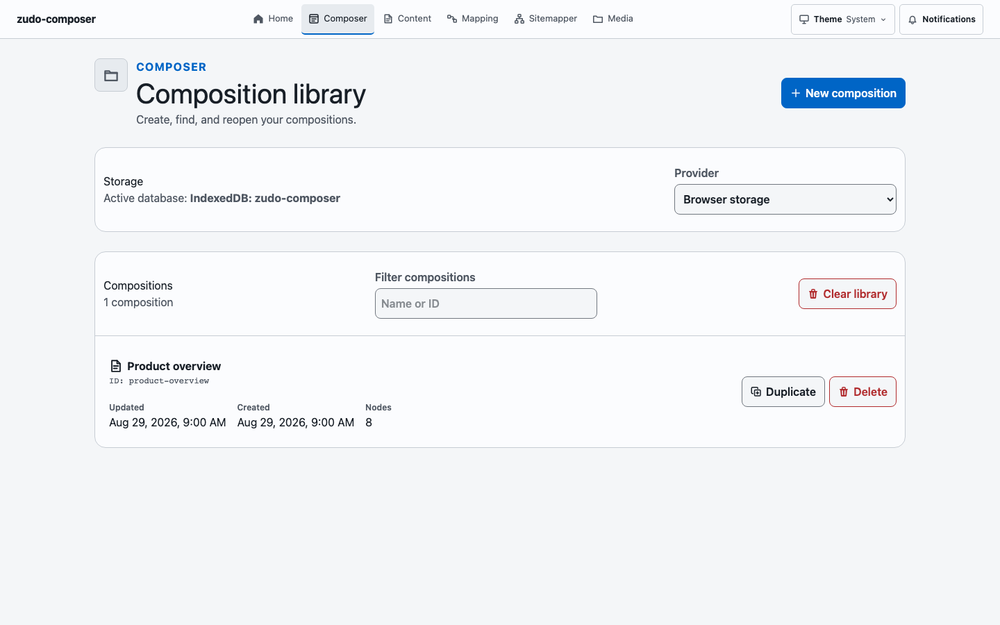
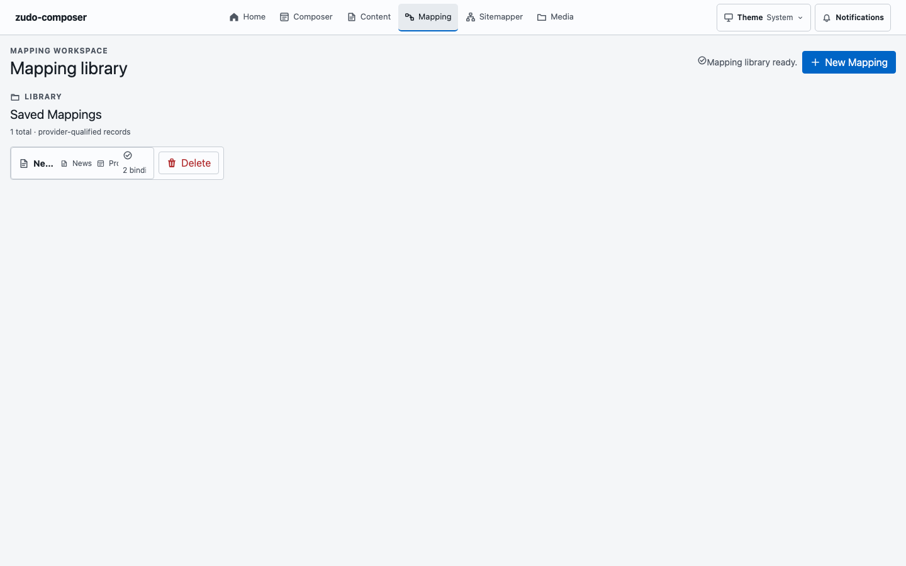
Composer: storage card + rows with always-visible Duplicate/Delete. Mapping: a card that truncates to “Ne… News Pro 2 bindi”. Sitemapper: centered cards. Content: a nested tree. Media: gallery/table tabs with no search, filter or sort anywhere.
“Content library ready.” / “Mapping library ready.” / “Media library refreshed.” sit as plain text in page headers; Composer and Sitemapper show a “Saved” chip in a toolbar; Content autosaves with no Save button while Mapping requires an explicit Save.
Composer’s inspector opens with two paragraphs of Reuse guidance before the selected node’s props. Content’s schema mode renders nine field-type cards inline per field. Mapping renders each binding as three stacked card regions.
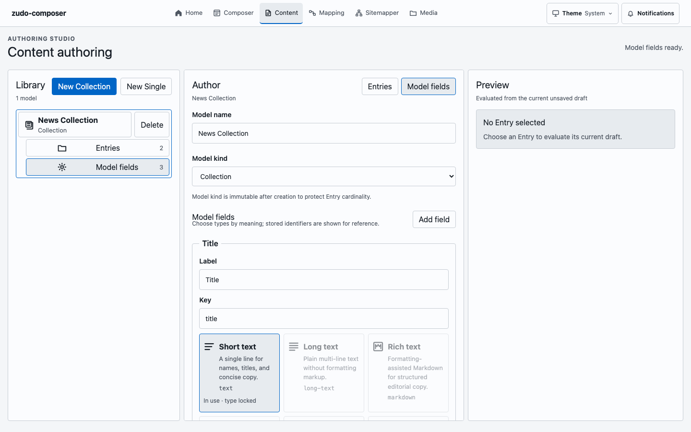
Every list row carries text buttons (Delete, Duplicate, Reload). Buttons mix “New Collection” with “New composition”. Sitemap/Sitemap s, Composition/“Static Composition”, Mapping/“Content Mapping”/“Mapping route family” appear side by side.
The route explains the product to a visitor. There are no counts, no recent records, no “needs attention” list, so the first click is always a guess.
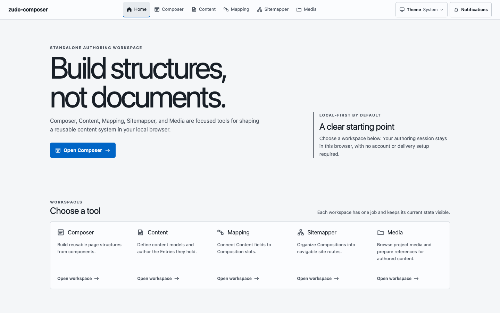
Dark graphite navigation rail (the unused --color-rail-* tokens already in the app) or a refined top strip; a 48px topbar with breadcrumb, status, search and utilities. Editors add one 44px tool row beneath it.
Blue only for: current nav item, selected row/node, focus ring, the single primary action, and “ready” status. Everything else is neutral. Warning and danger stay semantic.
32px chrome rows (toolbars, tree, table) and 36px picker rows. Spacing pairs from the same ×2 ladder (4/8/16/32 or 6/12/24) so groups read as groups.
Navigator · main · inspector, with real resizers and collapse buttons; on narrow screens the three become a segmented switch in the toolbar. Same skeleton for Composer, Content, Mapping and Sitemapper.
Every navigator tree (Composer structure, Content models and entries, Sitemap pages) uses the same outline: no row icons, a » mark on categories, dashed connectors, a right-aligned mono slug column with Show slug / Show count toggles, square caret toggles, inline “Add” rows at the child indent, and an insert-here `+` that appears when you hover the gap between two siblings. Clicking either opens an inline title input in place.
Rows show identity, kind and status; actions appear on hover or in a ⋯ menu. Destructive actions are last, separated, and end with an ellipsis.
5px default radius, 3px for nested controls, hairline borders, flat surfaces. Shadows only on popovers and dialogs. Chips are rectangles, never pills.
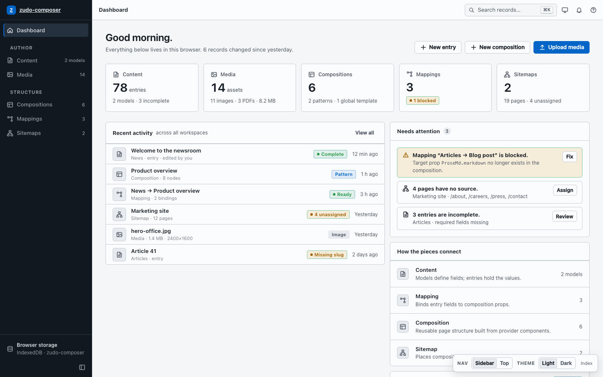
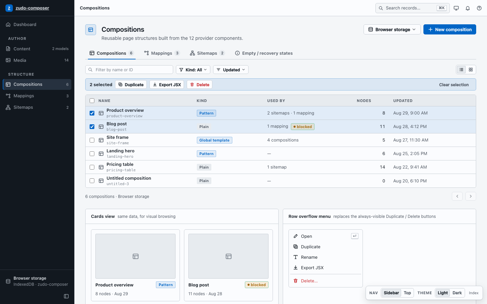
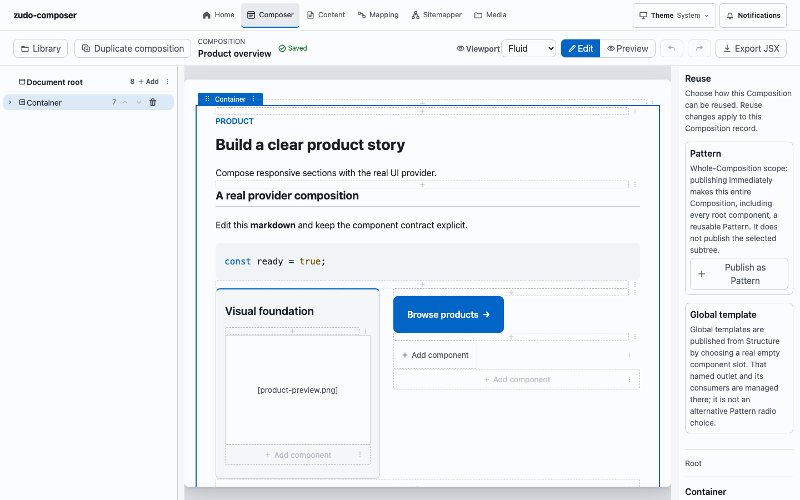
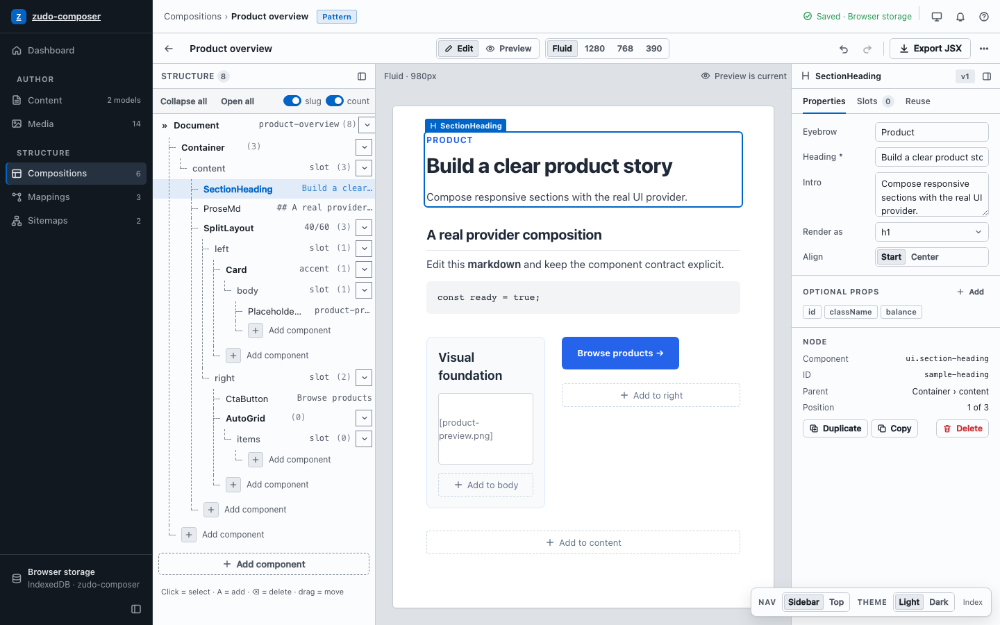
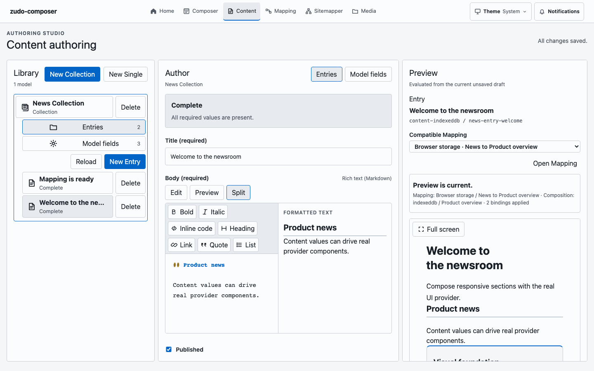
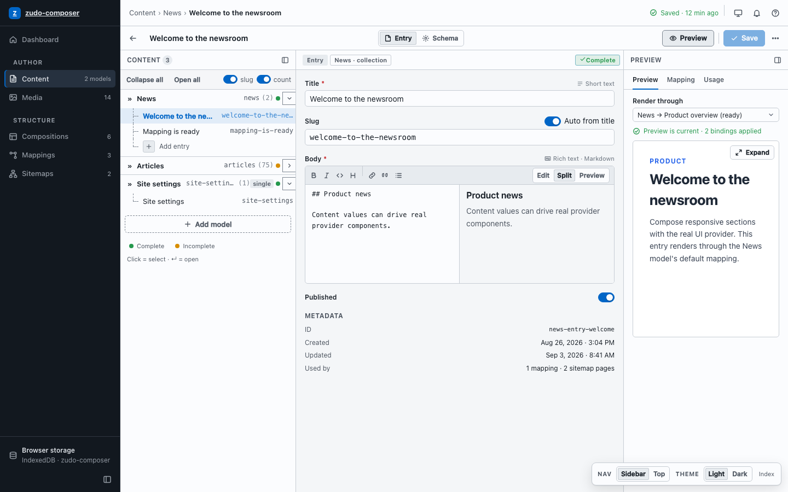
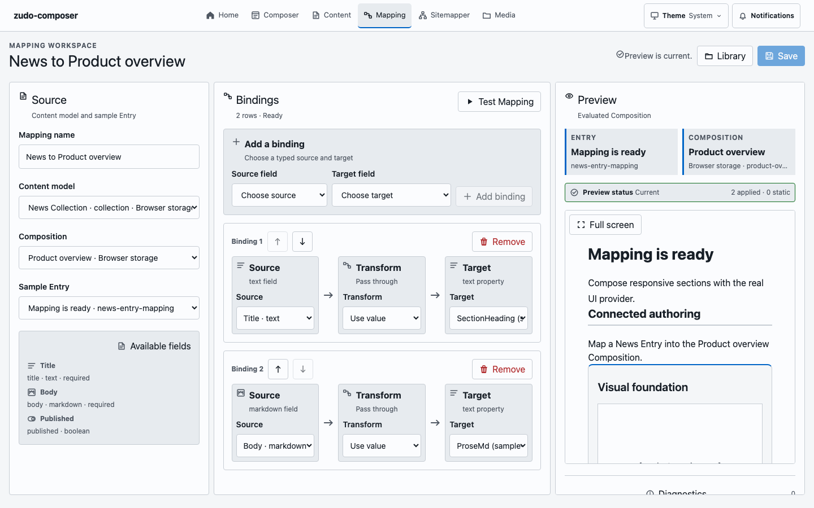
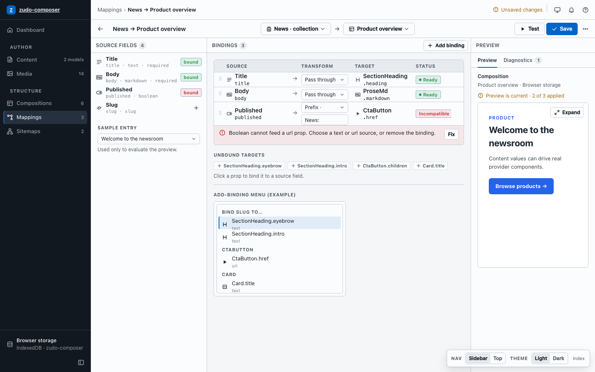
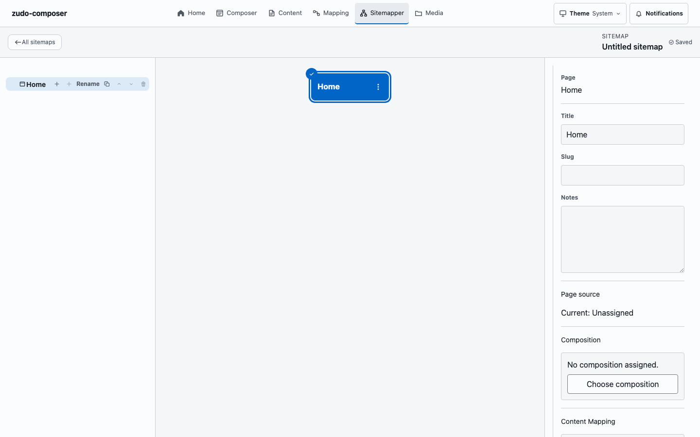
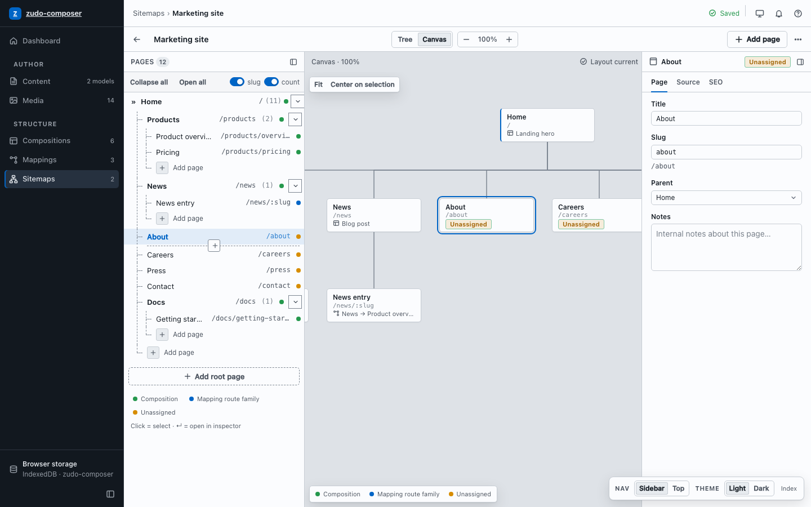
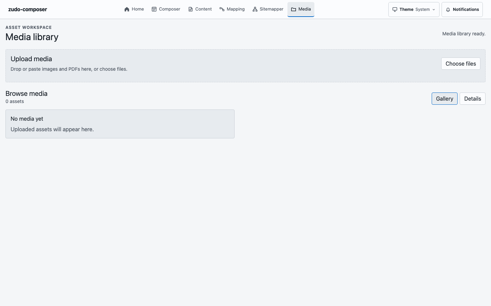
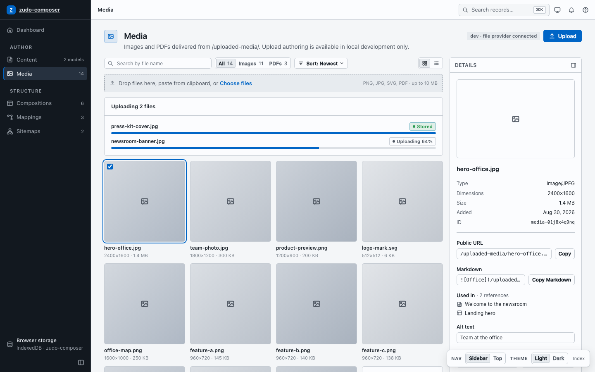